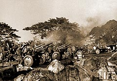

|
j
a v a s c r i p t |
Pg.1/5
February 10, 1945
"MACARTHUR FREES MANILA.... MOPPING UP OPERATIONS CONTINUE AS JAPS DESTROY CITY." So goes the two-page issue of Manila Free Philippines, [MFP] Vol.1; "Subscription payable later." The Veteran First Cavalry Division was first in on Saturday Night, February 3, followed "soon afterward" by the 37th Infantry Division, while the Eleventh Airborne Division drove into Southern Manila and today was "mopping up around Nichols Field." North Manila and Quezon City are all cleared of Japanese. The 1st Cavalry freed a total of 3,700 internees from Santo Tomas, while the 37th Infantry Division "captured" Bilibid, freeing 800-plus POWs and 550 civilians including women and children. Four of the five thousand freed were Americans. Civilians liberated included those recently sent to Manila from Baguio. The major portion of MacArthur's troops, says the article, is concentrated against Yamashita's estimated 75,000 "remnants" in the mountains and the North. MacArthur's Motto is "On To Tokyo".... "We shall not rest until our enemy is completely overthrown." I'm glad I read this paper; I didn't know that Manila had been liberated two days ago. I thought the battle was still on. . . . . Entered Santo Tomas area at 0950 just as a Japanese shell landed on the camp. I walked my bike up España in the midst of the shelling, all the way to the end of the camp or Gov. Forbes. Before getting there, a Japanese shell exploded in the eastern corner of the camp, and a 3-1/2-inch piece of shrapnel traveled 100 yards towards me, hit my bike on its front axle bolt, nicked my shoe then scooted some forty feet way. I ran after it and picked it up, juggling it in both hands to avoid being burned. Realizing shrapnel had even hit the roofs of the houses on my right I put it in my pocket, got on my bike, and turned right at Forbes. A block away, the Private of a light American tank showed me where a piece of shrapnel had just dented his steel helmet. The tank itself was in the process of moving back another block. I noted the Japanese shells came from Intramuros low and fast while American shells traveled high and slow.

Santo Tomas Artillery
The Japanese pumped about 50 shells into the camp in an hour or so. The Americans finally responded at 1100 by bombing and artillery from inside and outside the Camp, continuing even now at 1330. The South continues to burn — you can't tell where it ends or begins, but the north side is clear for the first time in almost a week except for a distant wisp of smoke.
|
|
|
|
|